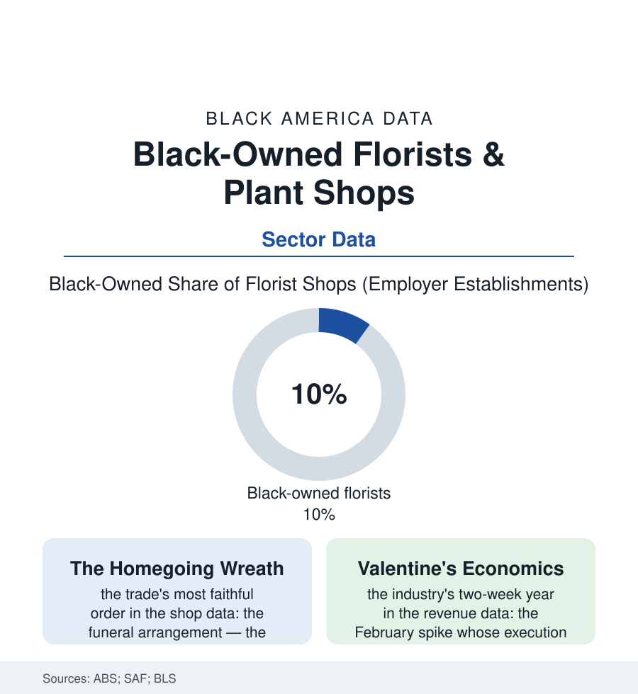

Black Business
The Flower Shop: Black Florists and the Language of Occasions
Florists arrange the community's whole emotional calendar — the wedding, the homegoing, the apology, the altar — and Black shops have held that corner for generations. The florist file.

The flower shop is the celebration economy's smallest storefront and its most fluent: a trade whose entire inventory is perishable, whose product is a message, and whose calendar is the community's own emotional year — Mother's Day, the wedding, the homegoing, the altar flowers that cannot be late. Black-owned florists have held prized corners in that trade for generations. This article reads the florist file.
A Corner, a Cooler, and a Calendar
The business model's bones show in the census categories: a retail florist is a studio wearing a storefront — the design bench and the cooler the plant, the delivery van the distribution, the walk-in trade a fraction of the book beside the occasion orders and the wire services' century-old network (the FTD and Teleflora systems that made the local shop a node in a national web — the Black shops' membership in those networks its own small history in the trade press, the floral wire as one of commerce's first platforms). The calendar rules the economics with a tyranny the revenue data make vivid: Valentine's and Mother's Day together deciding the year's profit in the industry surveys — the February execution a logistics opera (the roses bought months forward on the international exchanges, the temporary designers, the vans running until midnight) whose failure is unrecoverable until the next year's spike — and beneath the spikes, the faithful baseload of the Black shop's book: the church contract (the altar arrangements' standing order, the sanctuary's weekly flowers as annuity), the funeral home relationship of the death-care file (the homegoing's floral grammar — the family spray, the wreaths on their stands, the casket blanket — an order as specification-heavy and deadline-absolute as any in commerce, and the shop's bond with the funeral directors of the business file a mutual-referral institution generations deep), the prom and homecoming seasons' corsage economy, the hospital and the apology and the just-because of the everyday counter. The craft lineage runs through the industry like the catering file's: the arrangers trained in the shops themselves, the Black floral designers of the modern era ascending the wedding file's luxury tier and the editorial world (the event florists whose installations price like sculpture, their features in the bridal press the shelf's glossy frontier).
Perishability and the Platform Age
The trade's disruption arrived wearing the industry's own wire-service logic perfected: the online order-gatherers — the platform storefronts that harvest the search traffic for 'florist near me' and subcontract the arrangement to the local shop at a discount that consumes its margin — the trade associations' running war over the practice documented in the regulatory complaints, the local shop's countermove being the file's standard one: the relationship the platform cannot subcontract (the customer whose mother's order the shop has filled for thirty years, the funeral director's 6 a.m. call, the pastor's standing arrangement). The supply chain beneath reaches global in the import data (the roses of Colombia and Ecuador landing through Miami's floral port — the Black importers and wholesalers of the floral districts their own thin shelf in the trade data), and the product's frontier keeps moving indoors: the plant shop's renaissance in the younger customer data (the houseplant economy's boom years minting the Black plant boutiques and the social-media propagators — the cutting and the rare leaf as the new inventory, the shop as studio and classroom in the retail file's experiential turn). The census counts a modest shelf of firms. The calendar on the shop wall — the weddings booked, the standing orders, the spikes circled in red a year ahead — is the fuller document: a small business whose inventory dies in a week and whose customer relationships are measured in generations, which is the trade's whole paradox and its whole defense.
Reading the Florist Data
The florist file is the business section in miniature and in bloom: perishable stock, immortal relationships, a calendar written by the community's heart. The census counts the shops. The delivery vans, out before the funerals and after the valentines, trace the real map — every address a feeling, delivered on time, in flowers. Say it with flowers is the industry's slogan; the shops of this file have been saying it, for their own people first, all along.
More in Black Business
Black-Owned Businesses: Counts, Receipts, and the Representation Gap
About 161,000 Black-owned employer firms and three million solo ventures: how the Census Bureau counts Black business ownership, where firms concentrate, and the gap between population share and business share.
Black Median Net Worth: The Wealth Gap in Federal Reserve Data
The Federal Reserve puts Black median family net worth at $44,900, against $285,000 for White families — about 16 cents on the dollar. The widest gap in economic data.
Black Buying Power: The $1.8 Trillion Consumer Economy
Black buying power is estimated at about $1.8 trillion — larger than the economy of most nations. What the figure measures, who produces it, and what it buys.
Source: U.S. Census Bureau Annual Business Survey; Society of American Florists data; Bureau of Labor Statistics; Small Business Administration research.